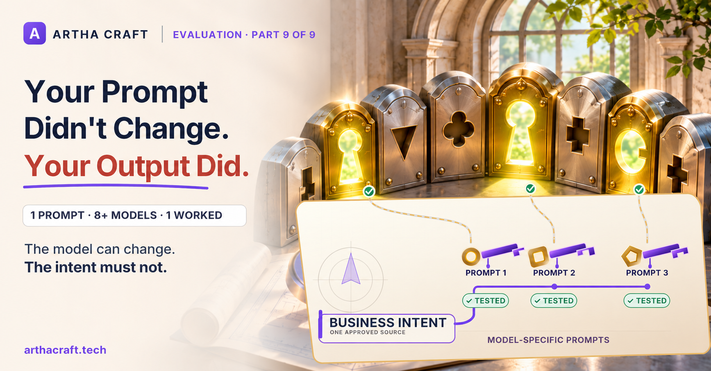

Part 1 · It looked right is not an evaluation
Decide what you are measuring, at which level, before you trust anything.
Prompts do not travel between models, and models change whether or not you choose to change them. Keep the intent as the constant, translate it into a prompt for each model, and let the golden set decide.

The requirements prompt from Part 7, the one that reads a business requirements document and produces typed, linked requirements, took a long time to get right. Once it worked, we tried it on other models, at least eight of them. [1]
It worked on one: the most capable model from one provider. On every other model the output was unusable. Not slightly worse. Unusable. The reverse was also true: prompts tuned on other models gave poor results when moved across.
That was when it became clear that a prompt is not a specification. It is a translation of a specification, written for one particular model. Move it to another model and you are not running the same thing any more.
Research has measured how fragile prompts are. One study found that widely used models were "extremely sensitive to subtle changes in prompt formatting," with accuracy differences of up to 76 points on one model from formatting alone. The sensitivity did not go away with larger models or instruction tuning, and the formats that worked best on one model correlated only weakly with those that worked best on another. [2]
If spacing and punctuation can move results that much, a prompt full of carefully tuned instructions, examples and constraints has little reason to behave the same on a different model. Seen that way, our eight models were the expected result rather than an exception.
Switching models is a choice. Model change is not. A study of one widely used commercial model found its accuracy at telling prime numbers from composite ones fell from 84 percent to 51 percent between March and June of 2023. The authors' conclusion: the "same" model service can change substantially in a short time, "highlighting the need for continuous monitoring." [3]
Models are also retired. One provider's published policy gives "at least 60 days' notice before model retirement," notes that deprecated models "are likely to be less reliable than active models," and states plainly: "Requests to retired models fail." [4] Every model you depend on has an end date that someone else will set, so a function that only works on one model is a dependency with an expiry date.
The model you tested is not guaranteed to be the model you are running next quarter.
Part 3 treated the prompt as the contract for the output, and Part 4 as the one input you control. Both hold for a single model, but across models the constant is the intent: what the functionality must do, for whom, with what evidence, what attributes, and how it should handle what is out of bounds. The prompt is how that intent is expressed to one model.
We are not the first to draw this line. Research frameworks such as DSPy separate a declarative description of what each step must do from the prompts that make a particular model do it, and generate those prompts automatically. [5] Our intent document applies the same separation and adds the controls a business needs: it is written in plain language, refined across models and approved by the business, and the golden set, rather than an optimiser, decides which prompt is accepted.
So we keep an intent document for every function, written in plain language and not tuned for any model. It goes through three rounds of review across several models, the same back-and-forth from Part 5, so that each model's questions and gaps sharpen it. The business approves it, and it is versioned like any other contract. Everything else in this series hangs off it: the golden set tests it, the code checks enforce it, the judge is calibrated against it.
When a commercial platform needs that function, the prompt is derived from the intent document for the model that will run it. Not copied from another model's prompt. Derived from the intent.
Whether the change is your choice or the provider's, the procedure is the same:
Keep the old pairing running until the new one has passed, and record which functions only pass on one model, because those are your exposure when that model is retired.
Decide what you are measuring, at which level, before you trust anything.
Real inputs, approved answers, out-of-bounds cases.
Grow it on purpose, set the threshold with the business, re-run it before every release.
Evidence for every claim, checked against the source, every output labelled.
Calibrate model judges against the people who know the business.
Evaluate the path agents take, on one visible record.
Value is in what the output carries for the next step.
Layer the checks, let agents recommend and people decide.
Prompts are per model. Models change. The golden set decides.
Model retirement is a scheduled risk. Track every function's model dependency, and plan migrations before the notice arrives.
Clients may require a specific provider or region. The intent document lets the same function be delivered on the model the client allows.
Run the golden set on a schedule against the model you are already using. Drift does not wait for a release.
The model will change.
The prompt will change with it.
The intent, and the cases that prove it, stay.
That is the whole series in one line: decide what right means, prove it with the business's own cases, and test everything else against them.
Jitander Chauhan